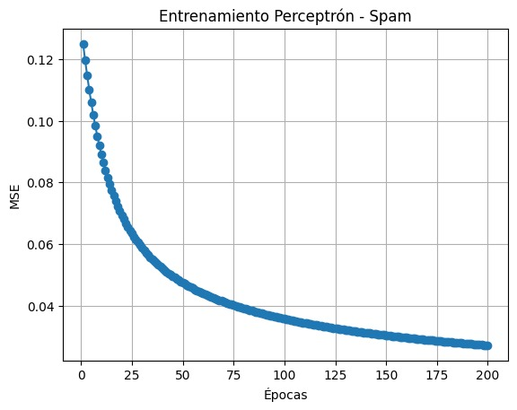
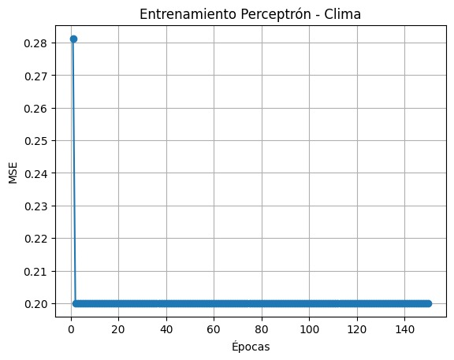
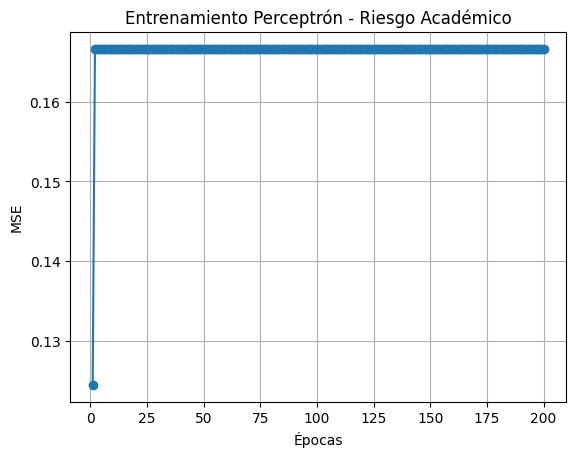
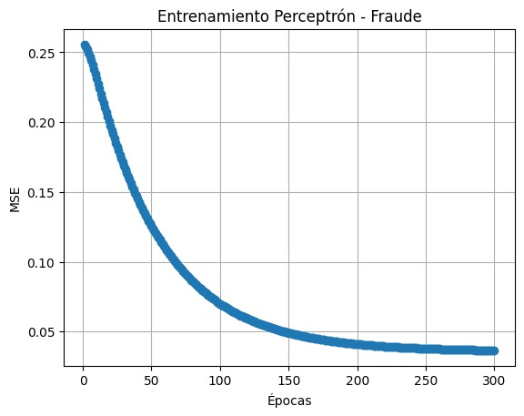

🎯 Objetivo
Crear y validar un perceptrón capaz de resolver problemas de clasificación binaria. Se probaron 6 casos: AND, OR, Spam, Clima, Fraude y Riesgo académico. Para cada caso se registró la pérdida/errores por época y se evaluó precisión final.
🧪 Casos de prueba (detallado)
1) AND lógico
Descripción breve: la salida es 1 solo cuando ambas entradas son 1. Problema linealmente separable.
| X1 | X2 | Y esperado |
|---|---|---|
| 0 | 0 | 0 |
| 0 | 1 | 0 |
| 1 | 0 | 0 |
| 1 | 1 | 1 |
Análisis de convergencia: usando activación escalón (step) y la regla clásica del perceptrón, el modelo converge en pocas épocas (usualmente <5). La frontera de decisión es una recta; se muestra una visualización abajo.
2) OR lógico
Descripción breve: la salida es 1 si al menos una entrada es 1. También es separable linealmente y más fácil de aprender que AND.
| X1 | X2 | Y esperado |
|---|---|---|
| 0 | 0 | 0 |
| 0 | 1 | 1 |
| 1 | 0 | 1 |
| 1 | 1 | 1 |
Análisis de convergencia: con regla clásica y activación escalón el perceptrón normalmente converge en 1–3 épocas. La recta que separa clases tiene intercepto distinto al caso AND.
📊 Resultados (resumen)
A continuación se listan los otros 4 casos y su activación usada. Para estos casos se muestran las curvas de entrenamiento (imagen referenciada). Si deseas puedo integrar las imágenes SVG/PNG directamente aquí.
Spam (sintético)
Activación: Sigmoide · Épocas: 200
Clima
Activación: Tanh · Épocas: 150
Fraude
Activación: ReLU · Épocas: 300
Riesgo académico
Activación: Sigmoide · Épocas: 200
